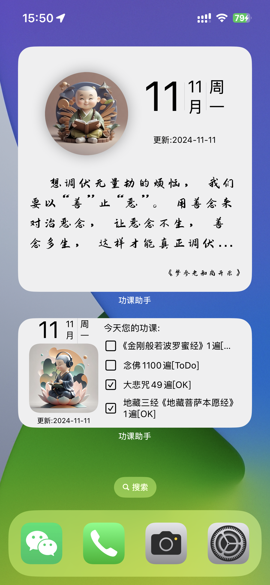
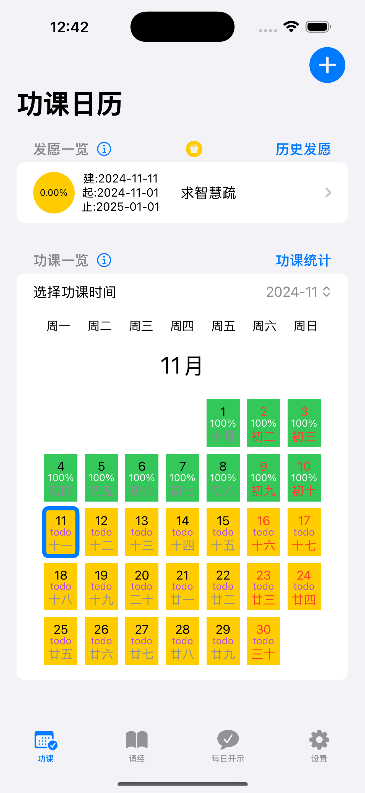
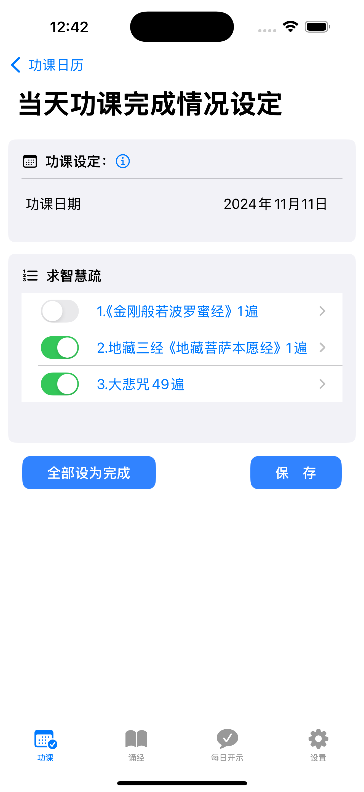
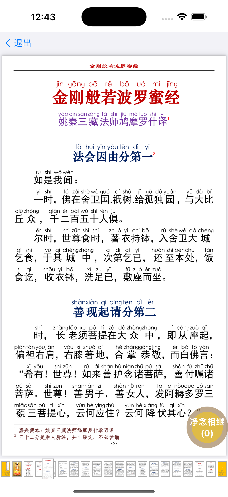
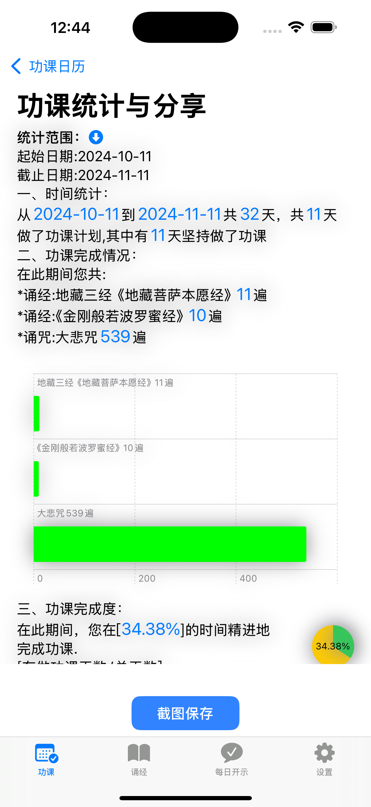
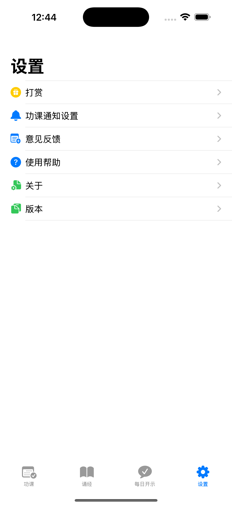

按照向导建立发愿，对自己的修行功课做出规划
Follow the guide to establish vows and plan your practice
每天提醒佛友做功课，完整记录功课完成情况
Remind you to practice daily and record your progress completely
通过苹果手机的文件分享导入pdf经书，可供日常查看做功课
Import PDF sutras via Apple's file sharing for daily study
可以通过功课统计页面查看过去一段时间的功课完成情况
View your practice completion status over a period of time
可以在手机上以小组件形式显示当天功课，每日开示
Show daily practice and teachings as a widget on your device
可以自定义拜忏的数量、间隔时长、回向文等，根据自己的计划来设定合适的拜忏功课
Customize repentance practice with count, interval, and dedication text
功课助手 佛友制定功课的小助手，以日历形式展示功课完成情况
如果您是一个在生活中忙忙碌碌希望能抽时间学佛的朋友，那么功课助手app可以帮助您。 功课助手主要是为坚持学习做功课的佛友提供一个管理、记录日常功课的工具。 它提供了发愿、日常功课完成、功课统计、诵经、诵咒计数、念佛计数、拜忏、打坐计时提醒等功能，方便在没有纸质经书的情况下完成佛学功课。
国外的佛友建议下载“诵经助手”，额外提供听书功能。
希望坚持学佛修行的佛友，需要管理和记录日常功课的修行者
通过苹果手机的文件分享功能导入PDF经书，可供日常查看做功课。 如果遇到导入问题，请联系开发者获取帮助。
国外的佛友建议下载“诵经助手”，额外提供听书功能。
您可以通过邮件联系开发者：yangxuehui@outlook.com 或在技术支持网站留言获取帮助。
GongKe Assistant - A helper for Buddhists to plan and track daily practice
If you are a busy person who wants to find time to learn Buddhism, then GongKe Assistant app can help you. GongKe Assistant is mainly a tool for Buddhists who persist in learning and doing practices to manage and record daily practices. It provides functions such as vow making, daily practice completion, practice statistics, scripture recitation, mantra counting, Buddha name counting, repentance practice, and meditation timing reminders, making it convenient to complete Buddhist practices without paper scriptures.
Overseas Buddhist friends are recommended to download "SongJing Assistant" which additionally provides audiobook functionality.
Buddhists who want to persist in Buddhist practice, practitioners who need to manage and record daily practices
Import PDF sutras via Apple's file sharing function for daily study. If you encounter import issues, please contact the developer for assistance.
Overseas Buddhist friends are recommended to download "SongJing Assistant" which additionally provides audiobook functionality.
You can contact the developer via email: yangxuehui@outlook.com or leave a message on the technical support website for help.